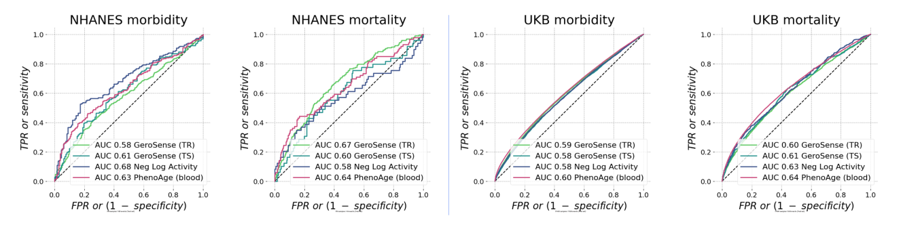

«Deep longitudinal phenotyping of wearable sensor data reveals independent markers of longevity, stress, and resilience»
(2021) medRxiv
Timothy V. Pyrkov, Ilya S. Sokolov, Peter O. Fedichev
GeroSense predicts health score based on a proportional hazards model trained to rank morbidity risks. ROC AUC validation test shows the ability of GeroSense to rank morbidity and mortality outcomes in follow-up data.
NHANES dataset: GeroSense has comparable
accuracy to blood test-based PhenoAge
(all values are adjusted for age and biological sex)
UK Biobank: UK Biobank: GeroSense has comparable
accuracy to blood test-based PhenoAge
(all values are adjusted for age and biological sex)
Cl 0.66 GeroSense (TR)
Cl 0.60 GeroSense (TS)
Cl 0.58 Neg Log Activity
Cl 0.64 ThenoAge
Cl 0.60 GeroSense (TR)
Cl 0.62 GeroSense (TS)
Cl 0.63 Neg Log Activity
Cl 0.60 ThenoAge
Cl 0.57 GeroSense (TR)
Cl 0.56 GeroSense (TS)
Cl 0.56 Neg Log Activity
Cl 0.56 ThenoAge
Morbidity status = presence of at least one of the age-related chronic health conditions: Diabetes, Cancer of any kind, Coronary heart disease (CHD), Congestive heart failure (CHF), Angina pectoris, Heart attack (MI), Stroke, Hypertension
Advantage of wearable data is the ability to ambiently and non-invasively collect measurements day-by-day. Accuracy of GeroSenseincreases with longer data collection intervals for both smart-watches (left panel) and smartphones (right panel).
Less daily steps often indicate poorer health.
At the same time, walking more does not always predict greater life expectancy
GeroSense automatically finds health-related walking patterns regardless of the total activity level and correctly ranks populations by their life expectancy

(2021) medRxiv
Timothy V. Pyrkov, Ilya S. Sokolov, Peter O. Fedichev
(2019) accepted in Nature Communications
Timothy V. Pyrkov, Konstantin Avchaciov, Andrei E. Tarkhov, Leonid I. Menshikov, Andrei V. Gudkov, Peter O. Fedichev
(2018) Nature Scientific Reports 8.1 (2018): 1-11
Timothy V. Pyrkov, Konstantin Slipensky, Mikhail Barg, Alexey Kondrashin, Boris Zhurov, Alexander Zenin, Mikhail Pyatnitskiy, Leonid Menshikov, Sergei Markov & Peter O. Fedichev
(2021) Inverse
Sophie Putka
(2021) Independent
Joanna Whitehead